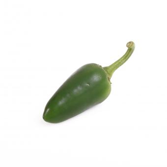

265,000 – 350,000 Scoville Units. Developed in Charleston, South Carolina by ARS (Agricultural Research Service)
scientists, the TigerPaw-NR is an extra-hot bright orange habanero variety. It is highly resistant to many species of
root-knot nematodes.
265,000 – 350,000
Diablo Grande Pepper
60,000 – 100,000 Scoville Units. The fruits of this chile start out yellow-green and ripen to red, with a narrow
crescent-shape and somewhat thick flesh. They may be harvested while green or red.
60,000 – 100,000
Trinidad Scorpion Cardi
800,000 – 1,000,000 Scoville Units. The Trinidad Scorpion is a rare and extremely hot pepper which originates from
Trinidad. The pods are bigger, longer and thicker than the ‘regular’ Trinidad Scorpion.
800,000 – 1,000,000
Numex XX Hot Pepper

60,000 – 70,000 Scoville Units. The chiles are slim with thin walls and smooth skin, and grow to 3-5 inches.
60,000 – 70,000
Devil's Tongue Red
250,000 – 500,000 Scoville Units. The original Devil’s Tongue is a Yellow variety developed by an Amish farmer in
Pennsylvania. Later on a red variety emerged. It has a higher heat level than it’s yellow relative and a totally
different flavor.
250,000 – 500,000